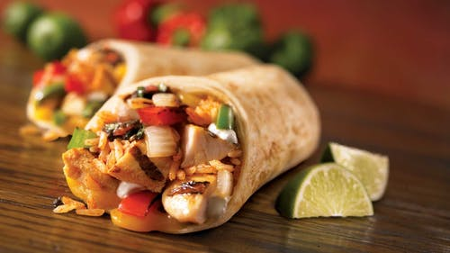

Magnificent Food has been at the forefront of the
healthy-eating movement for
more than 25 years. Through our award-winning magazine and high-quality, content-rich website, we
publish deliciously healthy recipes like Balsamic & Parmesan Roasted Cauliflower and Zucchini Noodles
with Avocado Pesto & Shrimp and healthy cooking how-to guides, such as How to Cook Quinoa and The Right
Way to Prepare Oatmeal and 5 Tips for Making It Better.
Our authoritative, science-based journalism—such as 8 Ways to Follow the Mediterranean Diet for Better
Health and The Best Breakfast Foods for Weight Loss—helps our readers make better-informed food choices. Our
easy-to-follow meal plans are designed by registered dietitians and food experts to help you lose weight,
eat clean, get more fiber, go vegan, vegetarian and more.
We are based in Vermont—where the magazine was originally founded in 1990—where we are surrounded by a
robust local, sustainable food culture, farm-to-table restaurants and a renowned craft beer and cider scene.
At Magnificent Food, our mission is to help make healthy happen every day. We provide the inspiration and
information people need to make healthy eating a way of life. Our experts offer delicious recipes, balanced
nutritional advice, thought-provoking stories and new ways to make healthy choices more exciting. We are
about moderation and balance—not strict rules or fad diets—because for healthy eating to become a way of
life, it should be accessible, sustainable, inspiring and—above all—delicious.